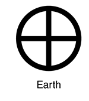

Земля
 Иногда упоминается как Мир, Голубая планета, иногда Терра (от лат. Terra). Единственное известное человеку на данный момент тело Солнечной системы в частности и Вселенной вообще, населённое живыми организмами
Иногда упоминается как Мир, Голубая планета, иногда Терра (от лат. Terra). Единственное известное человеку на данный момент тело Солнечной системы в частности и Вселенной вообще, населённое живыми организмами
. Научные данные указывают на то, что Земля образовалась из солнечной туманности около 4,54 миллиарда лет назад и вскоре после этого приобрела свой единственный естественный спутник — Луну. Предположительно жизнь появилась на Земле примерно 3,9 млрд лет назад, то есть в течение первого миллиарда после её возникновения. С тех пор биосфера Земли значительно изменила атмосферу и прочие абиотические факторы, обусловив количественный рост аэробных организмов, а также формирование озонового слоя, который вместе с магнитным полем Земли ослабляет вредную для жизни солнечную радиацию, тем самым сохраняя условия существования жизни на Земле. Радиация, обусловленная самой земной корой, со времён её образования значительно снизилась благодаря постепенному распаду радионуклидов в ней. Кора Земли разделена на несколько сегментов, или тектонических плит, которые движутся по поверхности со скоростями порядка нескольких сантиметров в год. Изучением состава, строения и закономерностей развития Земли занимается наука геология.
 Приблизительно 70,8 % поверхности планеты занимает Мировой океан, остальную часть поверхности занимают континенты и острова. На материках расположены реки, озёра, подземные воды и льды, вместе с Мировым океаном они составляют гидросферу. Жидкая вода, необходимая для всех известных жизненных форм, не существует на поверхности какой-либо из известных планет и планетоидов Солнечной системы, кроме Земли. Полюса Земли покрыты ледяным панцирем, который включает в себя морской лёд Арктики и антарктический ледяной щит.
{kind=link}
Сопоставление размеров планет земной группы (слева направо): Меркурий, Венера, Земля, Марс
Внутренние области Земли достаточно активны и состоят из толстого, очень вязкого слоя, называемого мантией, которая покрывает жидкое внешнее ядро, являющееся источником магнитного поля Земли, и внутреннее твёрдое ядро, предположительно, состоящее из железа и никеля. Физические характеристики Земли и её орбитального движения позволили жизни сохраниться на протяжении последних 3,5 млрд лет. По различным оценкам, Земля будет сохранять условия для существования живых организмов ещё в течение 0,5 — 2,3 млрд лет.
Земля взаимодействует (притягивается гравитационными силами) с другими объектами в космосе, включая Солнце и Луну. Земля обращается вокруг Солнца и делает вокруг него полный оборот примерно за 365,26 солнечных суток — сидерический год. Ось вращения Земли наклонена на 23,44° относительно перпендикуляра к её орбитальной плоскости, это вызывает сезонные изменения на поверхности планеты с периодом в один тропический год — 365,24 солнечных суток. Сутки сейчас составляют примерно 24 часа. Луна начала своё обращение на орбите вокруг Земли примерно 4,53 миллиарда лет назад. Гравитационное воздействие Луны на Землю является причиной возникновения океанских приливов. Также Луна стабилизирует наклон земной оси и постепенно замедляет вращение Земли. Некоторые теории полагают, что падения астероидов приводили к существенным изменениям в окружающей среде и поверхности Земли, вызывая, в частности, массовые вымирания различных видов живых существ.
Планета является домом для миллионов видов живых существ, включая человека. Территория Земли разделена на 195 независимых государств, которые взаимодействуют между собой путём дипломатических отношений, путешествий, торговли или военных действий. Человеческая культура сформировала много представлений об устройстве мироздания — таких, как концепция о плоской Земле, геоцентрическая система мира и гипотеза Геи, по которой Земля представляет собой единый суперорганизм.